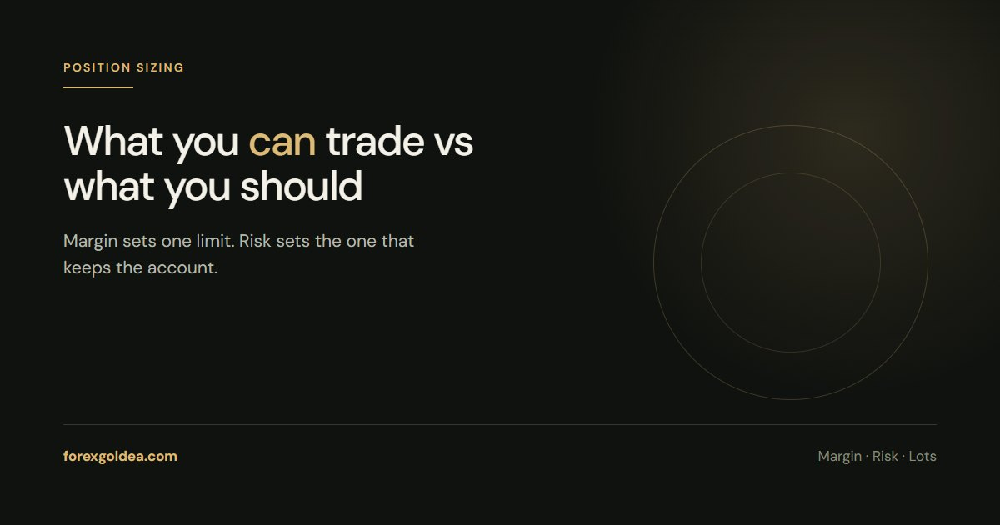

Margin vs Risk: How Many Gold Lots to Trade?

Two different limits sit on every gold trade. Margin sets the largest position the broker will let you open. Risk sets the largest one you can survive being wrong about. They are rarely the same number, and the gap is where accounts are lost.
The margin limit
Margin is the deposit the broker holds while a position is open. At 1:100 leverage, a standard gold lot worth roughly $240,000 at a $2,400 price requires about $2,400 of margin. At 1:500 it is nearer $480.
So a $500 account on 1:500 leverage can technically open about one standard lot. That is the margin answer — and it is almost never the right one.
The risk limit
Risk works from the other end: what a loss costs. Take the same $500 account, 1% risk, a $4.00 stop.
The budget is $5, and $5 ÷ ($4.00 × 100 ounces) = 0.0125 lots, rounded down to 0.01.
One lot versus 0.01 lots. The margin limit is a hundred times the risk limit, and only one of the two numbers has any relationship to whether you are still trading next month.
Why the gap is so wide on gold
Gold moves in dollars, not fractions of a cent. A $10 daily range is ordinary, and $10 against a single standard lot is $1,000 — twice the balance of the account above.
That is the whole story of leverage on this instrument: it does not increase your edge, it only increases how fast the arithmetic resolves. The leverage guide goes further into what high leverage does and does not buy you.
What happens when margin is the binding limit
If you size by margin, a modest adverse move takes the account into a margin call and then a stop out, where the broker closes positions to protect itself.
Worth being clear about the order: the stop out is not a safety feature for you. By the time it fires, most of the balance is gone. It is the broker making sure the loss stops at your money rather than theirs.
The practical rule
Calculate both. Size by the risk number. Use the margin number only to check the trade is possible at all — if the position you want is larger than the margin allows, the account is too small for that stop distance, and the answer is a smaller position or a different trade, not more leverage.
The lot size calculator handles the risk side, and our page on XAUUSD margin covers what each size ties up.
Reader questions
How many gold lots can I trade with $500?
By margin, roughly one standard lot at 1:500 leverage. By risk, nearer 0.01 lots if you are risking 1% with a $4 stop. The risk number is the one to trade with; the margin number only tells you the position is technically possible.
What is the difference between margin and risk?
Margin is the deposit held while the trade is open, and it is returned when the trade closes. Risk is what you actually lose if the stop is hit. Margin limits the size you can open, risk limits the size you can afford.
Does higher leverage let me risk more?
No. Leverage changes the margin required, not the loss per point of movement. A 0.01 lot position loses the same amount at 1:50 as at 1:500 - higher leverage simply frees up margin that was never the constraint on a sensibly sized trade.
What is a margin call on a gold account?
A warning that equity has fallen to a set percentage of the margin in use. If the position keeps losing, the stop out level follows and the broker closes trades automatically. Both levels are published in your account terms.
Why does my broker allow a position I clearly cannot afford?
Because the broker is only checking margin, which is their exposure, not your survival. Nothing in the platform asks whether the stop distance fits your balance. That check is yours to make before the order goes in.
Where this leaves you
Run both calculations and trade the smaller one - which will be the risk number essentially every time. Margin tells you what the platform permits; risk tells you what the account can absorb. Traders who confuse the two do not usually get a second lesson.
Affiliate disclosure: we earn a commission when you open and fund an account through our partner links, at no extra cost to you.